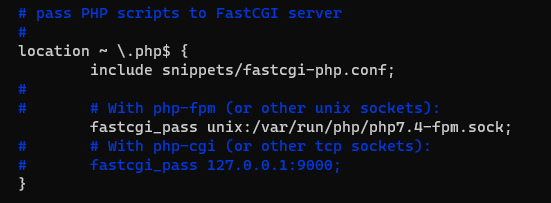

Linux下编译Azerothcore源码
前言
终于开始介绍Linux下如何编译AzerothCore源码了，本文编译和架设方法较为繁琐和细致，含Ubuntu、Debian和Docker（相较之前的Docker教程来说本文是手动版），且涉及到搭建注册网站和对外开放服务部分，故再次声明：本网站均为技术研究，若参考本网站教程搭建对外服务，我均不负任何责任！
系统环境
本文所述命令均为在Root账户下执行，若你用的是非Root账户，请输入su root切换至Root。另外本文默认你对Linux稍微有基本认识，如何SSH连接服务器、如何vim编辑什么的就不用说了吧。
请使用Ubuntu 18.04以上版本，如果你非要用Ubuntu 18.04或旧版系统，你需要额外安装gcc-10和libboost1.74-dev，命令如下：
add-apt-repository -y ppa:ubuntu-toolchain-r/test |
接下来安装环境：
apt-get update && apt-get install git cmake make gcc g++ clang libmysqlclient-dev libssl-dev libbz2-dev libreadline-dev libncurses-dev mysql-server libboost-all-dev vim rename screen |
请使用Debian 10以上版本，接下来安装环境：
apt-get update && apt-get install git cmake make gcc g++ clang default-libmysqlclient-dev libssl-dev libbz2-dev libreadline-dev libncurses-dev mariadb-server libboost-all-dev vim rename screen |
Docker如何安装请参照本网站《Docker 编译 Azerothcore 源码》部分内容，安装完毕后输入：
docker pull ubuntu #拉取Ubuntu镜像 |
接下来输入vim /etc/ssh/sshd_config，将PermitRootLogin前面去掉#，后面从prohibit-password改为yes，退出编辑后输入service ssh restart&& service ssh status重启SSH服务。
在此期间显示 “Do you want to continue? [Y/n]” 的，输入 y 回车即可，下文若出现类似提示将不再赘述。期间如果让你输入国家，请依次输入 6 和 70，如图所示：

源码编译
下载源码
cd / && git clone https://github.com/azerothcore/azerothcore-wotlk.git --branch master --single-branch azerothcore |
如果出现“fatal: unable to access ‘https://github.com/azerothcore/azerothcore-wotlk.git/’: GnuTLS recv error (-110): The TLS connection was non-properly terminated.”，请重新输入一遍命令。
上面是官方地址（保证最新），如果下载速度过慢不愿意等，按 Ctrl+C 结束下载，换成以下命令（我同步的 Gitee 地址，不保证最新）：
cd / && git clone https://gitee.com/gswxy/azerothcore-wotlk.git --branch master --single-branch azerothcore |
功能安装
这个链接是官方 Github 存储库，里面有众多的功能模块，如果你英文不好的话，多用下翻译，以自动平衡功能为例：

建议下载解压后使用WinSCP等工具，将文件夹上传到 /azerothcore/modules 目录。
温馨提醒：
src文件夹内有后缀为cpp的文件，如果你想修改模块源码，可以使用Notepad++等工具进行编辑。
构建编译
cd /azerothcore && mkdir build && cd build |
如果编译中出现错误，请自行排错后重新编译，编译完成后的服务端在/root/azeroth-server目录。
服务器设置
Data文件
点此链接下载并解压官方的data文件，或者将你自行提取的data文件（提取方法参见《Windows 下编译 Azerothcore 源码》部分内容），使用WinSCP等工具，将data文件夹上传到 /root/azeroth-server 目录。
数据库安装
vim /etc/mysql/mysql.conf.d/mysqld.cnf #按i进入编辑模式，在“bind-address= 127.0.0.1”前面输入#，按Esc，输入“:wq”回车 |
在最后一步导入数据库之前，如果你不想使用acore用户，请执行：
cp /azerothcore/conf/dist/config.sh /azerothcore/conf/config.sh && vim /azerothcore/conf/config.sh |
在文末找到以下字段，修改用户名和密码，比如我全部改成了root用户：
温馨提醒：如果你加了功能模块，在其文件夹内可能会有
data或sql文件夹，里面有SQL文件，请使用HeidiSQL或Navicat等工具导入数据库。
设置配置
建立worldserver.conf和authserver.conf配置文件：
cp /root/azeroth-server/etc/*.dist /root/azeroth-server && cd /root/azeroth-server && rename 's/\.dist$//' *.dist && mv /root/azeroth-server/*.conf /root/azeroth-server/etc |
接下来可输入vim /root/azeroth-server/etc/authserver.conf和vim /root/azeroth-server/etc/worldserver.conf命令来修改服务器配置，需要注意的是，需要修改conf文件里以下内容：
LoginDatabaseInfo = "127.0.0.1;3306;acore;acore;acore_auth" worldserver.conf #此字段authserver.conf和worldserver.conf都有 |
上述字段内的第一个acore是数据库用户名，第二个acore是数据库密码，请更改为自己的。另外如果你前面添加了功能模块，则需要执行以下命令生成配置文件：
cp /root/azeroth-server/etc/modules/*.dist /root/azeroth-server && cd /root/azeroth-server && rename 's/\.dist$//' *.dist && mv /root/azeroth-server/*.conf /root/azeroth-server/etc/modules |
功能模块的所有配置文件均在/root/azeroth-server/etc里，请修改后缀为.conf的文件。
外网设置
使用HeidiSQL或Navicat等工具连接数据库，打开acore_auth数据库的realmlist表。其中address栏，如果你想提供对外服务，请填写你服务器的公网IP地址，如果你只是想局域网的伙伴连接你的服务端，请填写你本机的局域网IP地址。另外name可自定义为你服的名字，改完后不要忘记按Ctrl+S保存。
启动脚本
输入cd /root/azeroth-server/bin && vim auth.sh，然后输入以下脚本：
#!/bin/sh |
退出编辑后，输入vim world.sh，然后输入以下脚本：
#!/bin/sh |
退出编辑后，输入vim restarter.sh，然后输入以下脚本：
#!/bin/bash |
退出编辑后，输入vim shutdown.sh，然后输入以下脚本：
#!/bin/bash |
退出编辑后，输入chmod 777 /root/azeroth-server/bin/*.sh即可，常用命令有：
- 输入
cd /root/azeroth-server/bin && ./restarter.sh可启动服务端； - 输入
screen -r auth或者screen -r world可以查看控制台，同时按Ctrl+A+D键可退出窗口，但不会结束进程； - 输入
cd /root/azeroth-server/bin && ./shutdown.sh可关闭服务端。
注册网站
环境安装
apt update && apt install nginx php-fpm php-gmp php-gd php-soap php-mbstring php-pdo php-pdo-mysql |
然后输入vim /etc/nginx/sites-available/default，将location ~ \.php$ {、include snippets/fastcgi-php.conf;、fastcgi_pass unix:/var/run/php/php7.4-fpm.sock;和下面的}前面的#去掉，如图所示：

并在index后面输入index.php，如图所示：
退出编辑后，输入service nginx restart && service php7.4-fpm restart重启服务。
网站搭建
注册网站推荐WoWSimpleRegistration，点击此处下载压缩包解压，将application/config/内的config.php.sample文件复制并重命名为config.php，config.php文件就是该源码的配置文件，推荐使用Notepad++工具打开，里面每项都有详细的英文解释，不懂的请自行翻译，常见修改如下：
===================================================================== |
其余配置项目请自己酌情修改，修改完毕后将文件夹全部上传到/var/www/html目录，如图所示：

开启SOAP
输入vim /root/azeroth-server/etc/worldserver.conf命令，然后输入/SOAP查找SOAP值，找到SOAP.Enabled = 0后回车按i键，修改为SOAP.Enabled = 1，按Esc键输入:wq后即可保存退出，重启服务端后即可使用网站注册账号。该网站的地址为你外网IP地址，如果你想本机打开，请在浏览器输入http://localhost。
防火墙配置
魔兽世界服务端所需的端口为3306、8085、3724，SFTP所需要的端口为22，注册网站所需要的端口为80。如果按以上教程搭建，外网仍无法访问，请自行查看服务器防火墙是否放行上述端口。
最后，如果有帮助到你，打个赏吧，有什么问题QQ群（938973736）交流。
 微信
微信 支付宝
支付宝